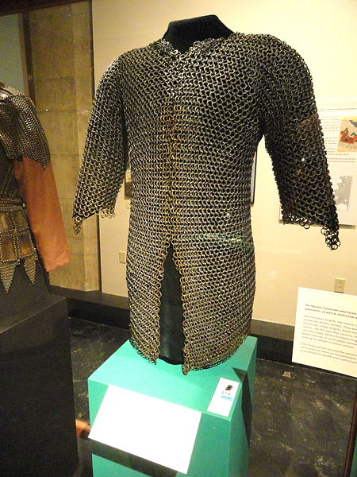
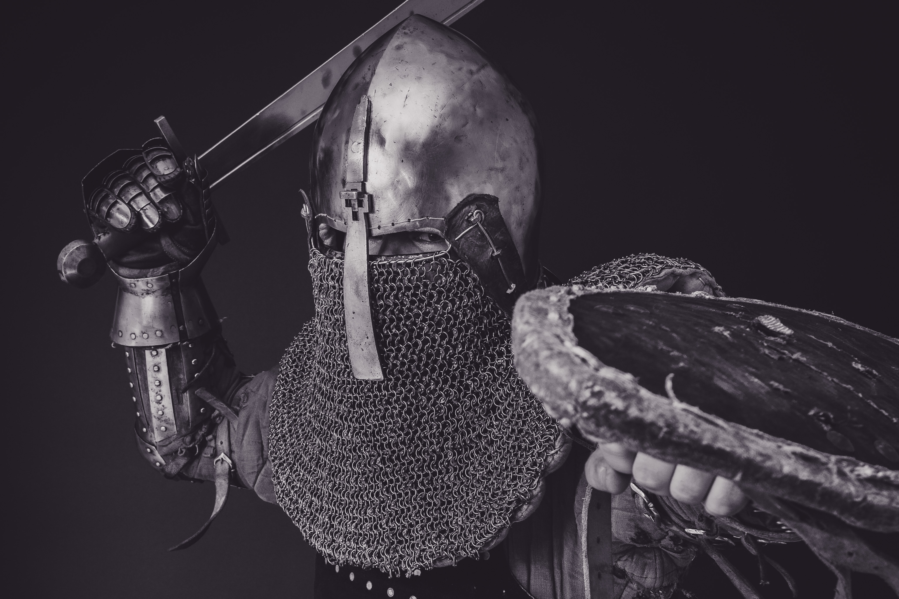

Chainmail Armor
The full chainmail
Contrary to plate armor, chainmail is used when you need armor that’s lighter than plate armor. Though not nearly as comfortable as plate armor, it was still lighter. Plate armor was strapped to your body, chainmail is more of a long shirt, it rested on you in a very uncomfortable manner. It still allowed for mobility and protection against whatever they are going fighting. The mobility helped at the cost of protection. It didn’t provide good protection from blades or blunt weapons, but was still necessary for protection in times of war. Chainmail was used as early as 3rd century B.C and as late as the 14th century A.D.
Chainmail Shirt
A chain mail shirt. Longer than the plate armor, but it's not very comfortable compared to full plate armor, but it's a lot more mobile. Plate armor being strapped to you is still a lot heavier.
Chainmail Mask
A chainmail mask. Chainmail masks were used in combination with other armor pieces. The combinations can not only look really good, but they can be fairly protective, even though chainmail on its own isn't.